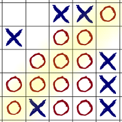

Gomoku is a strategy board game played on a 19x19 board. Touch the screen to place your mark. The winner is the first player to get 5-in-a-row.
This info is displayed when you first start Gomoku Fast, and can be accessed form the menu. Press undo in the action bar to cancel previous moves. When either player wins, double tap the screen to continue playing with the starting order changed. Use the menu in the action bar to start a new game, againts the CPU or a human opponent.
Gomoku and variants are played on a 19x19 grid. Gomoku Quick offers the additional option to play on a hexagonal grid. The rules of the game are the same on both grids. There is also the possibility of playing 6-in-a-row.
Gomoku Quick is made by Toni Makkonen